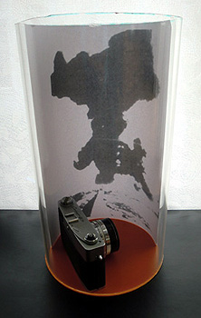

<!DOCTYPE HTML PUBLIC "-//W3C//DTD HTML 4.01 Transitional//EN">
<HTML>
<HEAD>
<META http-equiv="Content-Type" content="text/html>
<META http-equiv="Content-Style-Type" content="text/css" media="all">
<TITLE>みいけ展示室</TITLE>
</HEAD>
<BODY>

<BLOCKQUOTE>
<TABLE>
  <TBODY>
    <TR>
      <TD width="516">
      <P class="MsoNormal" style="text-indent:71.65pt;mso-char-indent-count:4.92"><B style="mso-bidi-font-weight:normal"><FONT color="red" size="+1">展示品　炭塵爆発を見つめたカメラ</FONT><SPAN lang="EN-US" style="font-size:16.0pt;
mso-font-width:90%"></SPAN></B><BR>
      </P>
      <TABLE>
        <TBODY>
          <TR>
            <TD width="91"></TD>
            <TD width="404">　　　
            </TD>
          </TR>
        </TBODY>
      </TABLE>
      <p class=MsoNormal style='text-indent:11.0pt;mso-char-indent-count:1.0;
line-height:17.0pt;mso-line-height-rule:exactly'><FONT face="MS UI Gothic">　1963年11月9日、三井鉱山三池鉱業所三川鉱第一斜坑で炭塵大爆発が
発生。死者458人、ＣＯ中毒患者約839人。
<spanlang=EN-US style='font-size:11.0pt'></span><BR>
　この戦後最大の炭鉱事故をとらえた人が愛用していたカメラ（キャノネットＱＬ）である。撮影者は、地元の植埜吉生さん、当時19歳。中学を卒業して
酒店に勤めていた。<BR>
　撮影場所は福岡県大牟田市小浜町付近。堤防道の右側は埋め立てられつつあった海で、左側には三井鉱山小浜社宅が軒を連ねていた。爆発現場からは
そう遠くない。当時まだめずらしかったカメラを常時持ち歩いていたらしく、バイクで配達途中に炭鉱爆発に遭遇。その瞬間を見事とらえた。<BR>
　同人はその後酒店を自ら経営するに到ったが、1996年52歳の若さで病死。同人の父親も三川鉱に勤務されていたが若くして病死されている。<BR>
　2013年3月、「炭鉱の歴史を残そうと頑張っておられるあなたのお役に立てれば亡き夫も本望だろう」と、故人の奥さんからいただいたカメラである。
</FONT></p>
      </TD>
    </TR>
  </TBODY>
</TABLE>
</BLOCKQUOTE>

</BODY>
</HTML>